Role of Iot in Sustainability
There are many sectors which are needed to be developed. So here comes the vital role of IoT. Some of the sectors which use IoT are listed below:
IoT in Agriculture
IoT smart agriculture products are designed to help monitor crop fields using sensors and by automating irrigation systems. As a result, farmers and associated brands can easily monitor the field conditions from anywhere without any hassle.
- Weeding robots
- Harvesting robots
- Machine navigation
- Remoting sensing
- Drones
- Material handling
 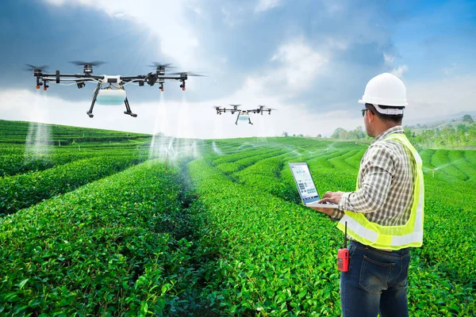
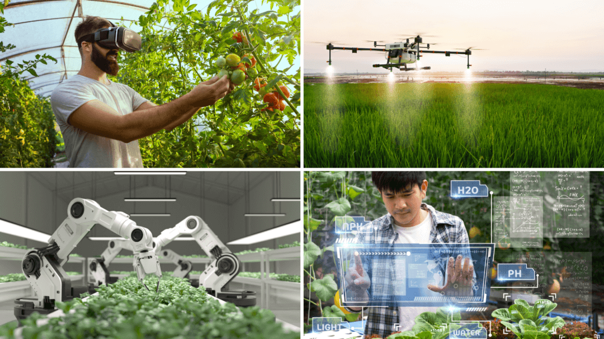
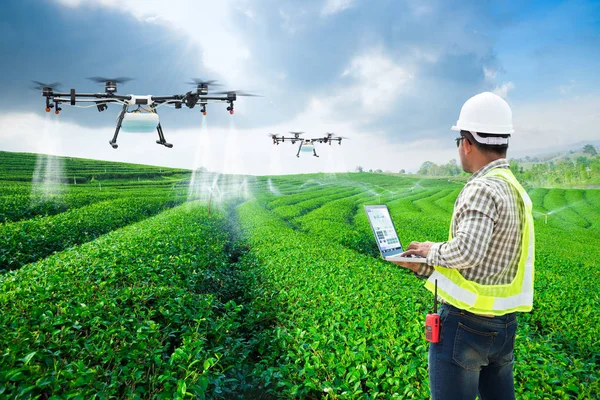
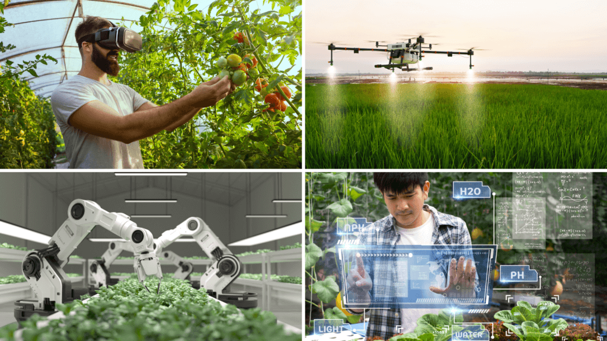
IoT in Health
IoT-based healthcare systems collect a variety of patient data and get inputs from doctors and medical professionals. All these devices can communicate with each other and take important actions that would provide timely help to save someone’s life.
- Smart Labs
- Heart-rate monitoring
- Diabetes Management
- Connected contact lens
- Robotic surgery
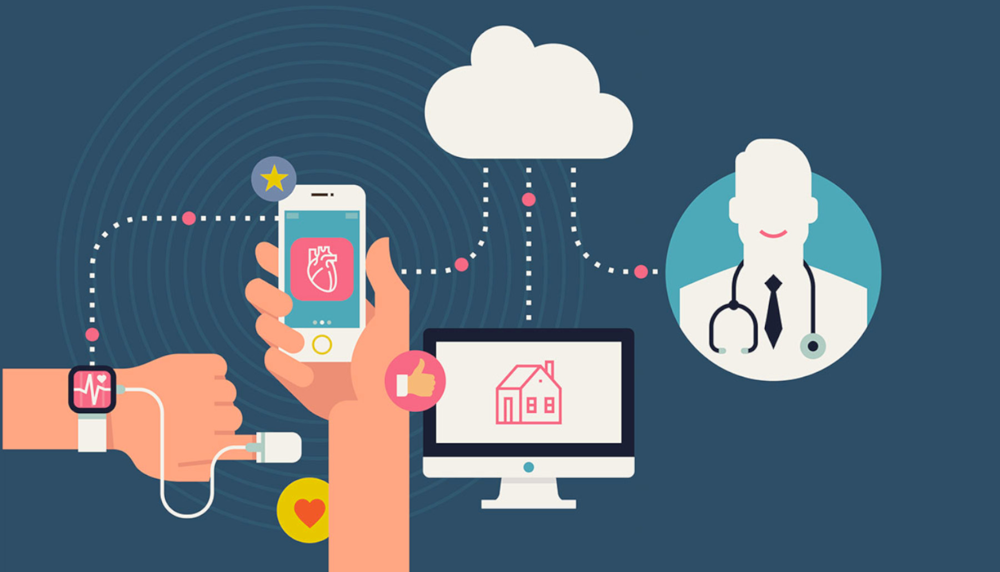
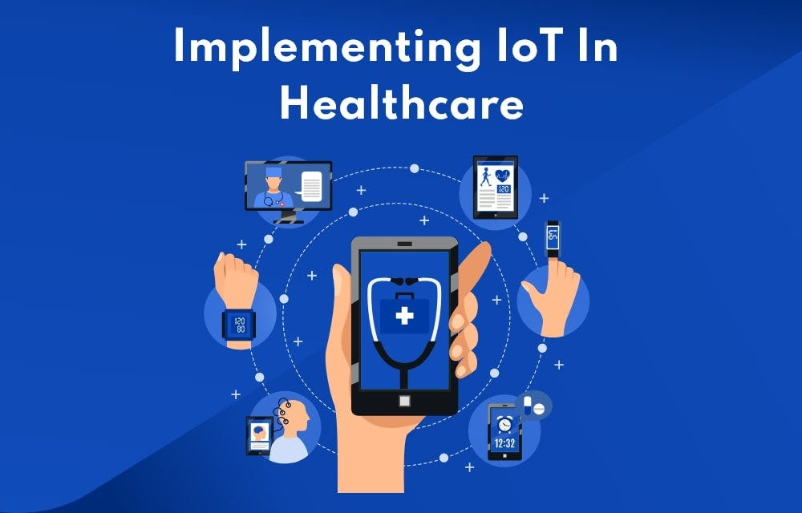
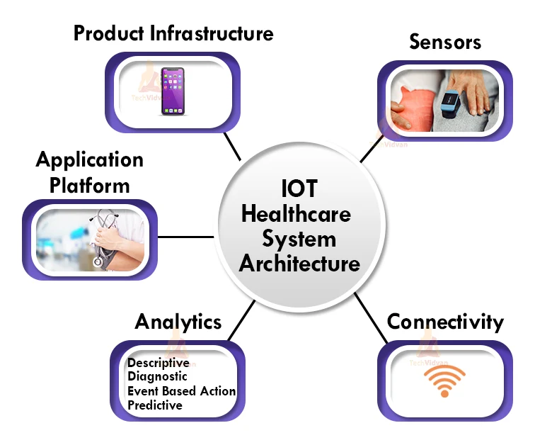
IoT in Smart City
IoT sensors can be installed on traffic lights, roadways, and vehicles to collect data on traffic patterns, congestion, and accidents. This data can be used to optimize traffic flow, reduce congestion, and improve road safety.
- Efficient energy management
- Smooth transportation system
- Air quality
- Acess management
- Infrastructure
- Enhanced experience for residents
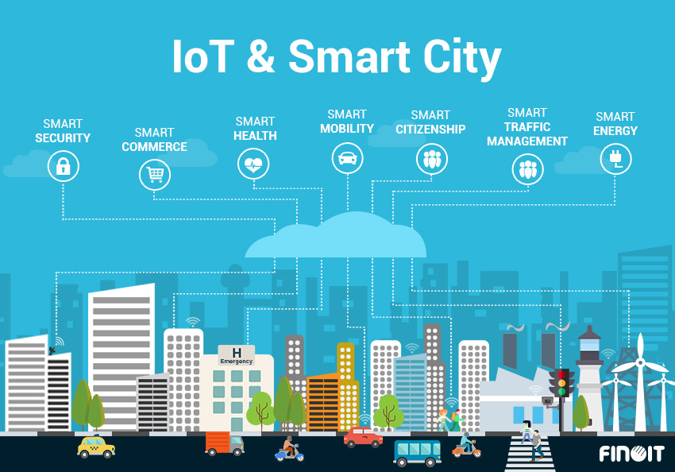
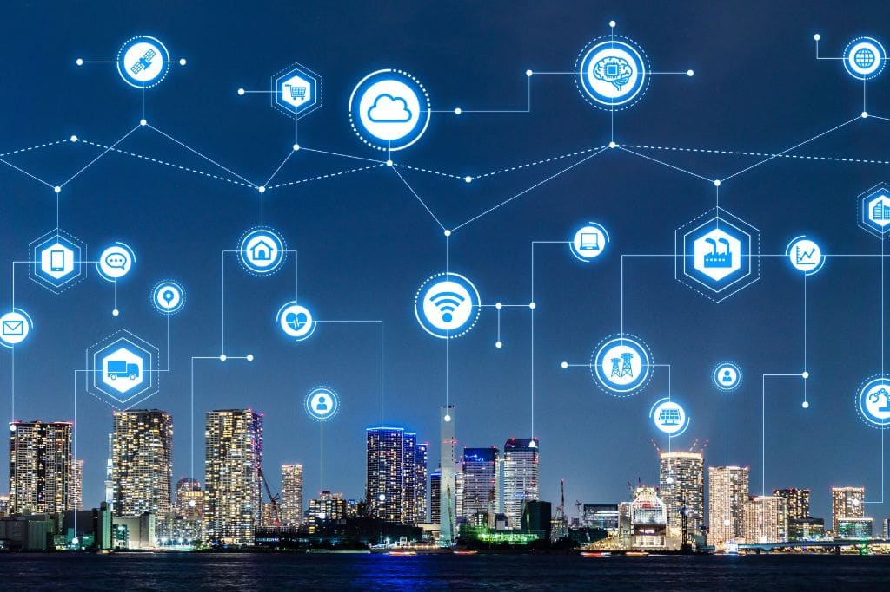
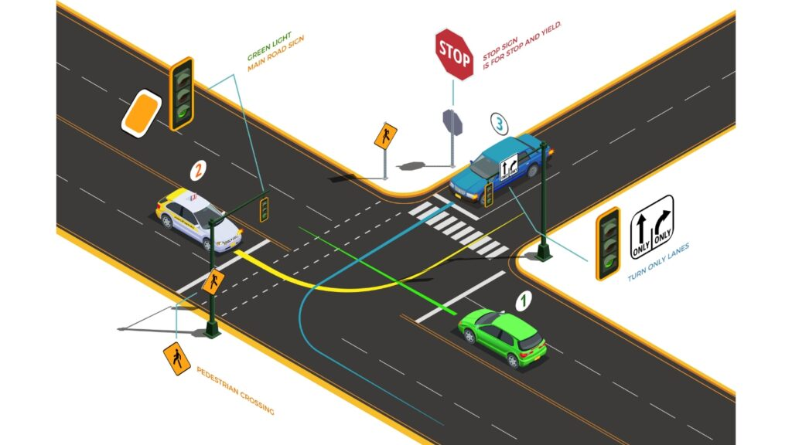
IoT in Education
The rise of technology and the iot allows schools to improve the safety of their campuses, keep track of key resources, and enhance access to information in the learning environment. Teachers can even use this technology to create “smart lesson plans,” rather than the traditional stoic plans of yesteryear.
- Facilitating online, real-time interactions.
- Informing parents through online.
- Personalized learning.
- Enhanced Safety and Security.
- Attendance Monitoring.
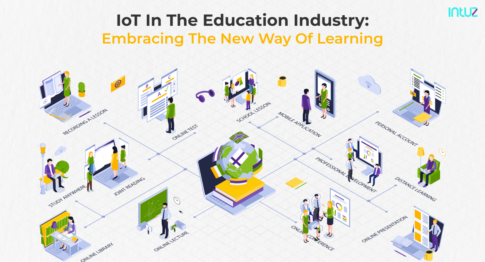
 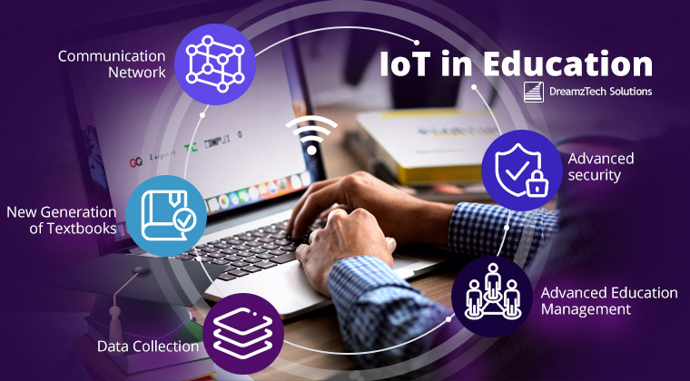
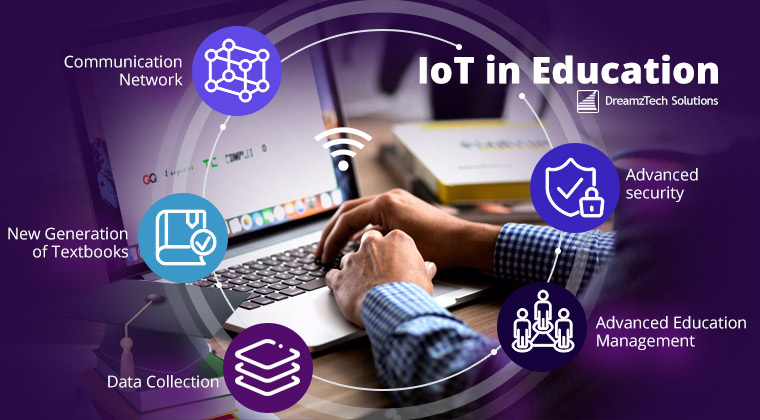
IoT in Water Management
An IoT smart water meter tracks the quality, pressure, and consumed quantity of water in a household or industry. An IoT smart water sensor can be used to track the flow of water across the entire plant and over the distribution channels. Helping in leakage detection, to reduce water wastage.
- Smart Irrigation
- Maintenance of Water Quality
- Monitoring the Consumption of Water
- Dam Management
- Improving the Water Efficiency
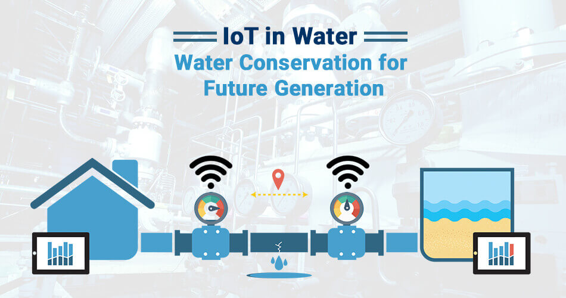
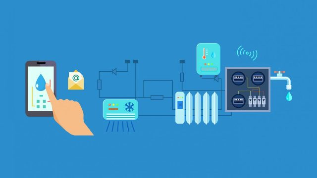
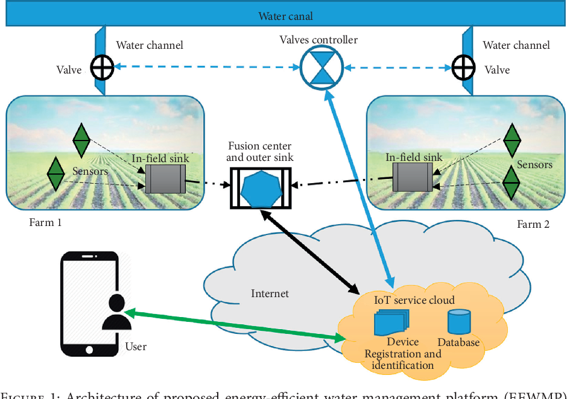